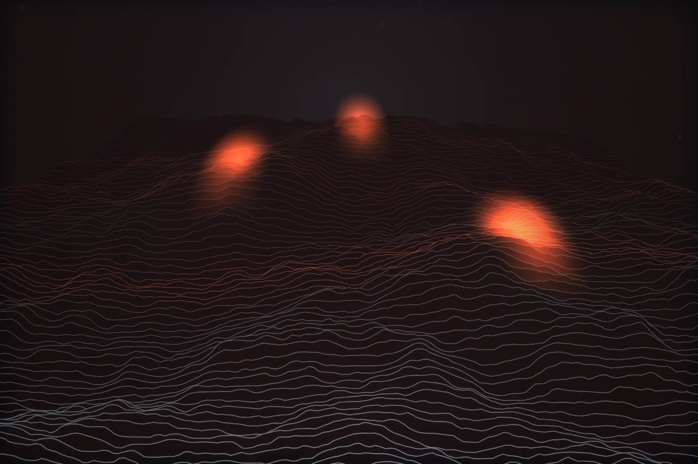

01
Detección y respuesta gestionada
Turno continuo de analistas propios sobre tu telemetría, no sobre un resumen. Triaje en menos de 6 minutos para P1, con acciones de contención previamente autorizadas por escrito y ensayadas en simulacro.
Detección y respuesta gestionada · Infraestructura crítica
Operamos la detección y la respuesta de organizaciones que no se pueden parar: energía, ferroviario, banca y salud. Telemetría sin muestreo, detección versionada como código y contención verificada.
Invar — aleación Fe-Ni al 36 % cuyo coeficiente de dilatación es prácticamente nulo. No cambia de forma cuando sube la temperatura.
01 Tensión
La mayoría de las intrusiones que investigamos no empiezan con un exploit: empiezan con una credencial legítima usada a una hora razonable desde una ubicación creíble. No hay binario que analizar ni firma que disparar. Solo hay comportamiento, y el comportamiento únicamente se ve si se conserva la telemetría completa y se sabe qué es normal en ese dominio concreto.
Lo que decide el daño no es el punto de entrada, sino los minutos siguientes. Entre el primer acceso y el primer salto lateral median, en nuestras investigaciones de 2025, 51 minutos. Ese es el presupuesto real de tiempo. Cualquier arquitectura de defensa que necesite un turno de mañana para reaccionar ya ha perdido.
En entornos industriales el problema se agrava: la convergencia IT/OT ha creado rutas de enrutamiento que nadie documentó y que sobreviven a las auditorías porque nadie las mira desde el lado correcto.

62%
de las intrusiones que investigamos en 2025 empezaron con una credencial válida, sin explotación de vulnerabilidad.
51 min
es la mediana entre el acceso inicial y el primer movimiento lateral efectivo que hemos medido en respuesta a incidentes.
78%
de los entornos OT auditados tenían tráfico enrutado desde IT sin control de sesión ni diodo de datos.
t+00:00
Acceso inicial
Comprometido Bajo observación Sano
02 Secuencia
Reconstrucción de un incidente real anonimizado en un operador ferroviario, diciembre de 2025. Desplaza para avanzar el reloj: cada tramo corresponde a un momento verificable de la línea temporal que entregamos al cliente.
t+00:00
Credencial válida de un proveedor de mantenimiento contra el portal VPN. Sin segundo factor, desde una IP residencial del mismo país. No hay binario, no hay firma, no hay alerta.
T1078.004 · Cuentas válidas
t+00:47
Volumen anómalo de consultas LDAP, enumeración de nombres principales de servicio y de relaciones de confianza entre dominios. La primera señal es estadística: 40× la línea base de esa cuenta.
T1087 · T1482 · Descubrimiento
t+02:10
Kerberoasting sobre tres cuentas de servicio con contraseñas de 2019. Sesión SMB hacia un servidor de ficheros de ingeniería y creación de un servicio remoto. El adversario ya es administrador local en dos máquinas.
T1558.003 · T1021.002 · Lateral
t+04:12
Correlación de tres fuentes —identidad, endpoint y flujo de red— sobre una regla propia, no una firma comercial. Incidente P1 abierto y turno de respuesta activado. Aquí es donde se gana o se pierde el incidente.
Detección propia · INV-1042
t+11:30
Aislamiento de cinco hosts en el agente, revocación de tokens de sesión y de actualización en el proveedor de identidad, y bloqueo de la infraestructura de mando en el cortafuegos perimetral. La propagación se detiene.
Manual RSP-07 · acción reversible y firmada
t+18:04
Rotación de secretos, retirada del servicio persistente y caza dirigida sobre el resto del dominio para descartar segundas vías. Cierre con línea temporal reproducible y las consultas usadas, entregadas al cliente.
Informe con trazas · reproducible
Ninguna de las seis fases depende de una herramienta concreta. Dependen de conservar la telemetría, de saber qué consultar y de tener permiso previo para actuar sin esperar a un comité.
03 Capacidades
No vendemos licencias ni revendemos plataformas. Operamos, escribimos la detección y respondemos con las manos en el teclado del cliente cuando el contrato lo permite.
01
Turno continuo de analistas propios sobre tu telemetría, no sobre un resumen. Triaje en menos de 6 minutos para P1, con acciones de contención previamente autorizadas por escrito y ensayadas en simulacro.
02
Detección como código: reglas en Sigma y en el lenguaje nativo de tu plataforma, versionadas en Git, revisadas por pares y validadas contra un banco de 4.000 trazas reales antes de llegar a producción.
03
Retén con activación en 45 minutos, 24/7. Adquisición forense en vivo, línea temporal reconstruida y contención dirigida. Entregamos las consultas y los artefactos, no solo las conclusiones.
04
Ejercicios dirigidos por inteligencia sobre el entorno de producción, con reglas de enfrentamiento firmadas. Medimos qué se detecta, en cuánto tiempo y qué regla falló. Compatible con marcos TIBER-EU y TLPT.
05
Modelo de niveles en Active Directory y Entra ID, acceso privilegiado con aprobación y caducidad, y capacidad real de revocar sesiones en segundos. La identidad es hoy el perímetro que de verdad se ataca.
06
Monitorización pasiva de redes de proceso conforme a IEC 62443-2-4, sin agentes ni tráfico activo sobre el bus. Inventario por escucha, detección de cambios de lógica y control de las rutas IT→OT que nadie documentó.
04 Arquitectura
01
Recogemos telemetría en crudo de endpoint, identidad, red, nube, correo y OT. Sin muestreo, sin agregación previa, sin descartar lo que hoy parece ruido: la consulta que resuelve un incidente casi siempre necesita el evento que alguien decidió no guardar.
02
Un solo esquema para todo lo que entra. Cada evento se resuelve contra un identificador único de activo y de identidad, de forma que una consulta sirva igual para un portátil, un contenedor efímero o una estación de ingeniería.
La misma señal, estrato a estrato: lo que entra legible sale sin estructura recuperable.
03
Las detecciones viven en un repositorio, no en la consola. Cada regla lleva autor, hipótesis, técnica ATT&CK asociada, tasa de falso positivo medida y prueba automática. Si una regla no pasa la prueba, no se despliega.
Todo lo que entra pasa por la misma garganta: un esquema, un reloj y un identificador por activo.
04
Manuales que son código, no documentos. Cada acción —aislar, revocar, bloquear, poner en cuarentena— está firmada, es reversible y deja registro con quién la autorizó y bajo qué condición previamente pactada.
05
Ninguna acción se da por buena porque la API devolviera 200. Comprobamos el efecto: si un host no queda realmente aislado en 90 segundos, el sistema escala a intervención manual y despierta a una persona.
05 Medición
Cifras propias del ejercicio 2025, calculadas sobre la totalidad de los incidentes gestionados y auditadas dentro del alcance de nuestra certificación SOC 2 Tipo II.
06 Campo
Operador con 1.900 subestaciones. Separamos la red de proceso de la corporativa, instrumentamos las seis rutas que quedaban abiertas y pasamos la detección de firmas a comportamiento de protocolo.
−94% alertas sin acción
Señalización y venta bajo el mismo grupo. Modelo de niveles en el directorio y respuesta con autorización previa: en el incidente de diciembre la contención llegó antes que la primera reunión de crisis.
18 min hasta el corte
Entidad bajo DORA. Ejercicio TLPT anual, registro de detecciones trazable al regulador y pruebas de resiliencia sobre proveedores críticos, incluidos los nuestros.
0 hallazgos mayores
Doce hospitales, equipamiento clínico que no admite agente. Monitorización pasiva por espejo de puerto y microsegmentación por función clínica en lugar de por VLAN heredada.
3.400 equipos sin agente
07 Doctrina
Somos 34 personas: 19 en operaciones, 7 en ingeniería de detección, 5 en respuesta y 3 en ofensiva. Sin comerciales. Fundada en 2017 en Madrid; segundo turno en Rotterdam desde 2021.
i
Entregamos la regla, la consulta y la traza. Si el cliente no puede reproducir una detección por su cuenta, no la consideramos una detección sino una opinión.
ii
Todo compromiso se expresa en minutos medidos sobre incidentes reales. Ningún nivel de servicio que no se pueda contar con un cronómetro entra en el contrato.
iii
Una plataforma bien instrumentada rinde más que siete integradas a medias. Antes de proponer una compra, agotamos lo que ya está desplegado.
iv
Cada manual se ejecuta en simulacro trimestral con el cliente delante. Un procedimiento que solo existe en un documento no es un procedimiento.
Primer contacto